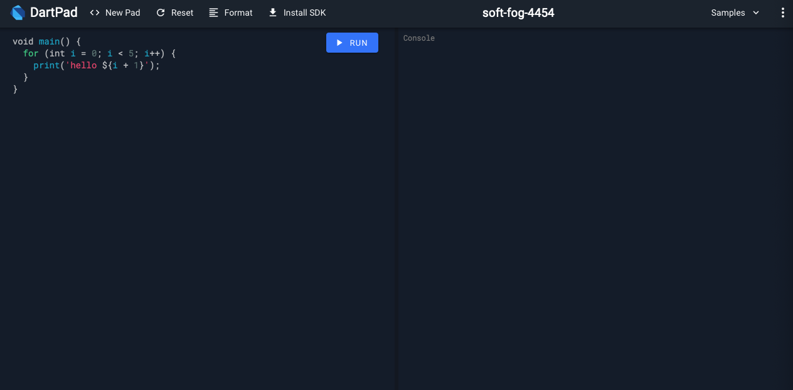

Dart Programming Language
Dart Programming Language
Created: June 4, 2020 5:46 PM Tags: Flutter, NotUploaded
Flutter를 공부하면서 Dart 언어를 공부하며 Dart 언어의 특징과 문법을 정리한다.
본 내용은 플러터 생존코딩 책을 공부하며 정리한 내용입니다.
Swift를 공부할 때 xcode 플레이그라운드를 이용하면 쉽게 공부할 수 있는 것처럼 Dart 언어를 공부하는데 dartpad.dev 사이트를 이용하면 쉽게 공부할 수 있다.

Dart 기본 문법
다트는 다음과 같은 기본 타입을 제공한다.
- int
- double
- String
- bool
이 중에서 int와 double의 경우 Num 타입의 하위 타입이다.
int a = 10;
double b = 20.0;
num c = a;
c = b;
상수를 표시할 때 final 키워드를 앞에 붙이면 상수가 된다.
final String name = "홍길동";
swift와 마찬가지로 타입 검사를 제공한다. (is, is!)
int a =10;
if (a is int) {
print("정수");
}
String text = "hello";
if (text is! int) {
print("숫자가 아님");
}
swift와 마찬가지로 형변환 키워드 as를 제공한다. 단, int와 double은 상하 관계가 없기 때문에 불가능하다.
Dart 함수
다트의 기본 함수 형태는 일반적인 자바 문법과 유사하다.
void 반환에 대해서는 일반적으로 생략한다.
int getPlusOne(int a) {
return a + 1;
}
printValue(int a) {
print(a);
}
다트에서는 람다식을 지원한다. 람다 형태는 스위프트, 코틀린, 파이썬 등에서 많이 사용되서 사용하는데, 익숙하고 굉장히 유용하다.
([]) => [동작 혹은 리턴값]
(number) => number % 2 == 0
선택 매개변수 기능을 제공한다. 함수의 매개변수가 있을 수 도 있고 null일 수 있는 형태다.
선택적 매개변수로 지정하게 되면 라벨을 붙여서 해당 변수를 표시해야 한다.
somePrint({String name, int age}) {
print("$name : $age");
}
somePrint(name: "홍길동"); // 홍길동 : null
somePrint(name: "홍길동", age: 12); // 홍길동 : 12
somePrint(); // null : null
if문 for문 switch case문은 기존 레거시 언어와 같아 생략한다.
Dart class
다트의 class는 역시 별로 어렵지 않다.
dart는 특이한게 모든 타입이 클래스로 레퍼런스 타입이다. 그런데 new를 사용해서 생성한 적이 없다. dart에서는 일반적으로 객체를 생성할 때 new를 생략한다.
class Person {
String name;
int age;
printInfo() {
print("$name: $age");
}
}
var hong = Person();
hong.printInfo(); // null: null
해당 내용의 특이점은 생성자가 없기 때문에 기본 생성자가 동작하고 모든 내부 변수가 null이 들어가게 된다. 위에서 말했듯이 다트의 모든 타입은 클래스라 null이 표시될 수 있다.
또 특이한 부분이 변수 앞에 _ 를 사용해서 접근 지정자를 제어한다. _가 앞에 붙은 변수는 private이고 나머지는 public으로 간주된다.
따라서 private 변수에 접근하기 위해서는 getter setter를 생성해야 한다.
class Person {
String _name;
int _age;
get name => _name;
set name(String newName) => _name = newName;
printInfo() {
print("$_name: $_age");
}
}
상속
클래스를 상속하는 것은 동일하다. extends를 사용해 상속한다.
class Hero {}
class Person extends Hero {
String _name;
int _age;
get name => _name;
set name(String newName) => _name = newName;
printInfo() {
print("$_name: $_age");
}
}
추상 클래스 역시 동일하게 존재하며 자바 키워드와 같다.
abstract class Monster {}
class Hero {}
class Person extends Hero implements Monster {
String _name;
int _age;
get name => _name;
set name(String newName) => _name = newName;
printInfo() {
print("$_name: $_age");
}
}
여기서 특이한 점이 하나 있다. Swift에서 프로토콜을 많이 사용하고 POP를 하는 이유 중 하나가 클래스는 하나만 상속 가능하기 때문인데, Dart에서는 with 키워드를 사용해 다른 클래스의 함수를 쓰거나 override할 수 있다.
이를 믹스인이라 한다.
abstract class Monster {}
class Hero {}
class Man {}
class Person extends Hero with Man implements Monster {
String _name;
int _age;
get name => _name;
set name(String newName) => _name = newName;
printInfo() {
print("$_name: $_age");
}
}
컬렉션
기존에 알던 것과 유사한 내용의 자료형을 제공한다.
- List: [1, 2, 3]
- Map: {1: “One”, 2: “Two”}
- Set: {1, 2, 3} - 중복 불가
스프레드 연산자라는게 있다. …을 사용하는데, 배열을 펼쳐주는 효과가 있다.
var intList = [1,2,3];
var sumList = [...intList, 4,5,6];
print(sumList); // [1, 2, 3, 4, 5, 6]
꿀팁으로는 list를 펼쳐서 set에 넣어주면 중복 제거하는 효과가 있다.
var dupList = [1,2,1,2];
var uniqueSet = {...dupList};
print(uniqueSet); // {1, 2}
dupList = uniqueSet.toList();
print(dupList); // [1, 2]
Map은 순서가 없고 탐색이 매우 빠른 자료구조로 Swift의 Dict형과 사용법이 같다.
함수형 프로그래밍
기존 함수형 프로그래밍 방법과 같아 보인다.
- map
- where
- forEach
- reduce
- …
다른 포스트에서도 지겹게 이야기했던 부분이라 넘어간다.
기타 특이 문법
계단식 표기법이라는게 있다. ..을 사용하는 것인데, 기존 코딩에서 많이 사용했던 then 문법과 같다.
var items = [1,2,3,4,5];
items
..add(6)
..add(7)
..remove(1);
print(items);// [2, 3, 4, 5, 6, 7]
컬렉션 if, 컬렉션 for라는 콜렉션 내부에서 사용할 수 있는 문법이 있다.
콜렉션 내부에서 사용하는 컨트롤 방법인데 이를 사용해 더 유연하게 콜렉션을 표현할 수 있다.
var items = [1,2,3,4,5];
var newList = [
"#0",
if (items.isNotEmpty) for (var i in items) "#$i"
];
print(newList);
null 처리
null에 접근하려하면 런타임 에러가 발생하는건 여느 프로그래밍 언어와 같다. 이를 해결하기 위해서 다양한 문법이 존재하는데, 이 역시 스위프트나 코틀린에서 봐온 익숙한 문법이다.
?를 사용해서 접근하면 에러 대신에 null을 반환한다.
String name;
print(name?.length);
??를 사용하면 null일때 기본값을 반환한다.
String name;
print(name?.length ?? 1); // 1